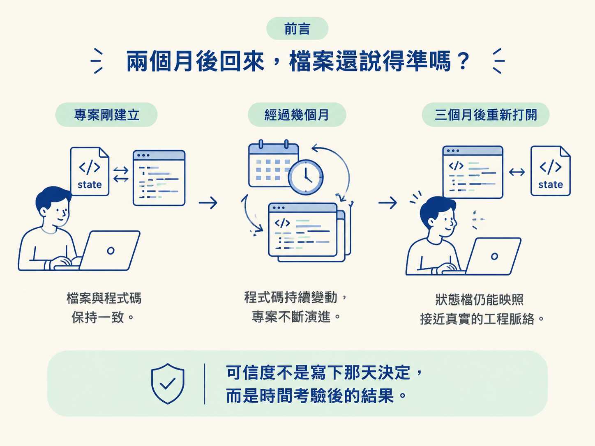
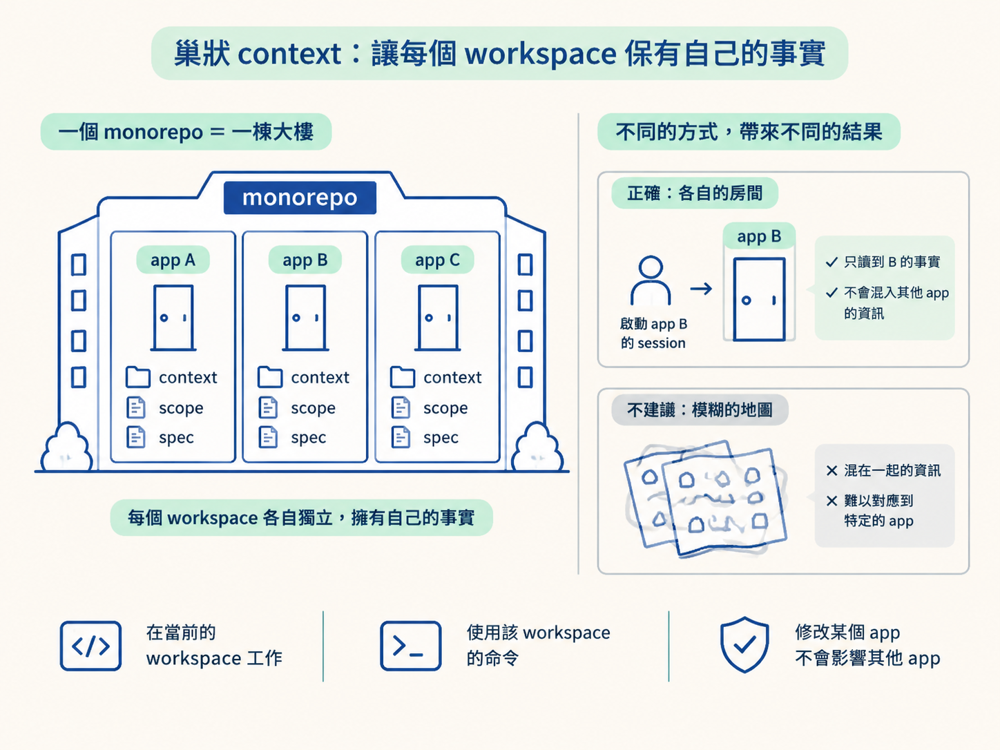
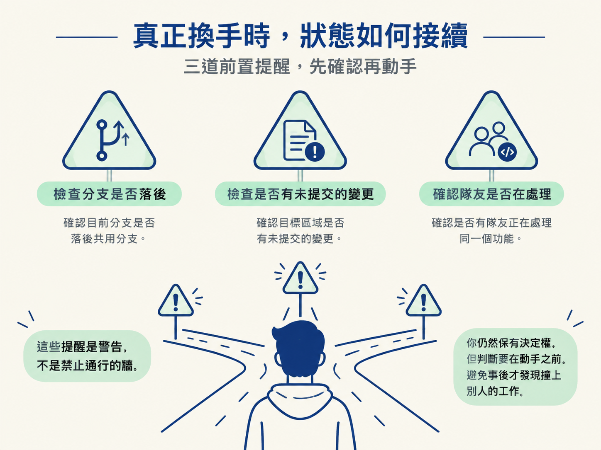

你將能說明：audit 如何從真實專案寫入狀態、sync 如何把文件對回程式碼，以及「不覆寫手寫內容」為什麼能讓檔案在換 session、換人之後仍然可信。
前面三步已經定下兩件事：有哪些狀態檔，以及誰擁有修改它們的權限。但規則能不能成立，要看時間過去之後還準不準，寫下的當天看不出來。
如果檔案只在建立當天正確，過了一個月就和程式碼脫節，那麼再嚴格的擁有權也救不了它。真正有用的狀態檔，應該能讓你三個月後重新打開專案時，仍然看見接近真實的工程脈絡。

這套工作流靠三個機制維持這份可信度：audit 從真實專案讀取並寫入狀態；巢狀 context 讓每個 workspace 保有自己的事實；sync 則持續把文件對回正在變動的程式碼。
audit 讀真實專案，不靠猜測context 檔之所以可靠，是因為內容是從專案讀出來的，不是憑空生成。audit 會實際檢查專案結構、技術棧，以及 architect 已經做過的決定，接著按照專案「實際存在的樣子」寫下 context。
這個先後順序很重要。全新專案必須先選好技術棧、建立基本骨架，audit 才有真實內容可以讀。如果只給它一個空資料夾，它沒有事實可依據，只能猜。
接手舊專案時，先跑 audit 更重要。既有程式碼庫的文件可能缺漏或過時，你甚至不一定知道它使用什麼技術棧。brownfield（既有程式碼庫）的標準做法，就是先讓 audit 讀專案目前的實際狀態，再寫下它現在如何運作。
它記錄的是工程脈絡，跟用哪個框架無關。因此，即使是十五年前、完全沒有 JavaScript 的 PHP 專案，也能整理出可用的 context。
讓檔案值得信任的另一個關鍵，是 audit 不會把你的手寫內容整份蓋掉。它只補上缺少的部分。
如果程式碼呈現的現況和文件說法互相衝突，audit 會把衝突標出來，交給你判斷；它不會擅自把文件改成自己認為正確的版本。這就像在地圖上插一支「這裡有落差」的旗子，而不是趁你不注意時重畫整張地圖。
因此，文件裡的人類判斷還看得見、也追得到，不會被 AI 靜悄悄地取代。
專案變大後，把所有事實塞進單一檔案，就像把整個城市的地圖、門牌和施工紀錄疊在同一張紙上：內容越多，越難找到眼前真正需要的資訊。
巢狀 context 解決的就是範圍問題。在 monorepo（一個 repo 裡放好幾個專案）中，每個 workspace 都有自己的巢狀 context 檔、scope、spec 和指令。
任何 skill 都在目前的 workspace 裡工作，並使用這個 workspace 的命令。修改其中一個 app，它不會順手伸進另一個 app。於是，新的 session 如果在 workspace X 裡啟動，讀到的就是 X 的事實，不會拿到把整個 monorepo 混成一團的模糊描述。

這裡的核心關係很簡單：狀態放在哪裡，事實的範圍就到哪裡。
sync 把文件重新對回程式碼檔案在寫下的那一刻可能是準確的，但程式碼還會繼續變動。負責補回這段落差的是 sync。
sync 在合併前的收尾階段執行，檢查程式碼目前的樣子，再把長期使用的檔案對回現況。它可能在你新增工程慣例時更新 context、把 scope 對回真實範圍，或標記因這次改動而過期的 spec。
它像外科手術，只動該動的地方，不會整份重寫：只新增必要的幾行，或修正它負責的部分，絕不改寫你親手寫下的文字。
整套工作流都遵守同一條界線：沒有 skill 會改寫你的文章，也不會伸手修改另一個 skill 擁有的檔案。這條界線讓檔案即使經過幾個月、換過幾輪人，仍然能保留原本的判斷與責任歸屬。
把這些機制放在一起看，就能明白為什麼這套設計強調「檔案」而不是「對話」。你可以在任何交接點清掉 session，之後再回來時，重要狀態仍然留在檔案裡。
例如，develop 接手一個做到一半的功能時，它會讀出哪些任務已經完成，直接從第一個尚未完成的地方繼續，不會把已經出貨的部分重新蓋一次。
團隊換手時也是同樣道理。develop 在開始修改前，會先檢查並提醒幾件事：
這些提醒是警告，不是禁止通行的牆。但它們會在任何人寫下程式碼之前出現，讓你先判斷要不要繼續，而不是事後才發現撞上別人的工作。

檔案能在換手後仍然可信，靠的是三層保護：audit讀取真實專案，並且不覆寫手寫內容；事實的範圍跟著 workspace 走，讓 monorepo 中每個 workspace 各自擁有 context、scope 和 spec；sync則在收尾時把知識重新對回程式碼，只做外科手術式的小修改。狀態住在檔案裡，所以清掉對話不等於丟掉狀態。
回看這四步，關係就連起來了：先確立狀態要放在檔案裡，再分清四種檔案各自保存什麼，接著用固定擁有權保護它們，最後用 audit 與 sync 讓內容在時間和換手中持續接近真實。
這張底層地圖之後會反覆用到。下一個節點會把它接到實際判斷上：卡住時該跑哪個 skill，以及 git 應該在什麼時機 commit。